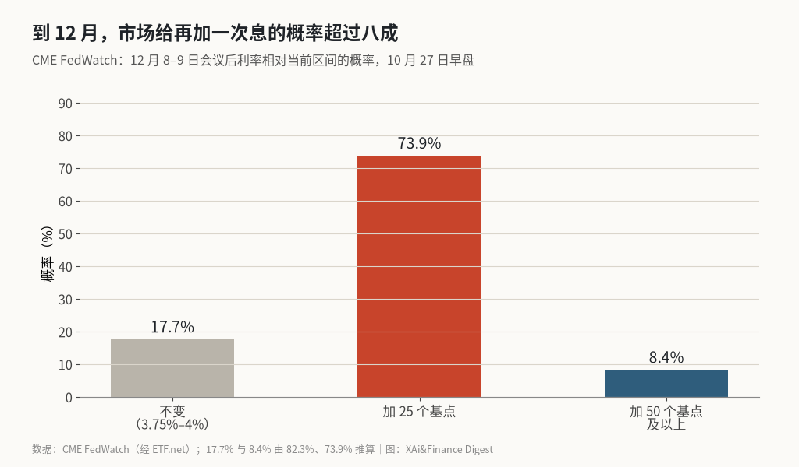
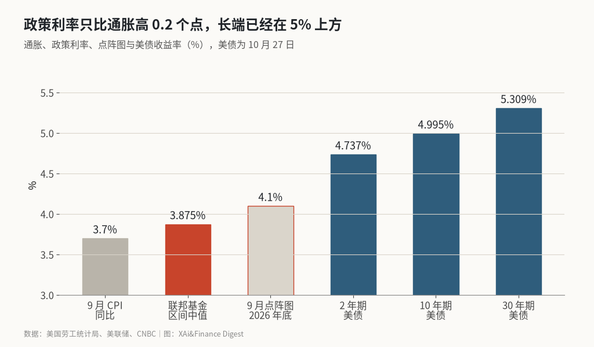

美联储今晚大概率按兵不动，市场已经把 12 月加息写进了价格
FedWatch 给本周维持利率约九成，到 12 月利率更高的概率 82.3%。按这组概率折算，年底政策利率约 4.1%，和 9 月点阵图的中值几乎重合。
要算的是期货市场替美联储写好的年底利率。CME FedWatch 10 月 27 日早盘显示，到 12 月 8–9 日会议时利率高于现在的概率是 82.3%，其中只加 25 个基点的是 73.9%。反推下来，不变 17.7%，加 50 个基点及以上 8.4%。
把 50 个基点那一档按 50 算，期望加息幅度约为 0.739×25+0.084×50，约 22.7 个基点。现在的目标区间是 3.75%–4%，中值 3.875%，加上去约 4.10%。9 月点阵图给 2026 年底的中值正好是 4.1%。
市场和美联储在年底利率上已经没有分歧。北京时间周四凌晨 2 点的决议，悬念不在利率本身。
12 月加息的概率，分布见图

本周按兵不动几乎是共识。FedWatch 早盘给 89.5%，CNBC 引用的是约 93%，Kalshi 的预测市场是 94%。
这轮周期的方向很清楚。7 月美联储维持利率，投票 9 比 3，Hammack、Kashkari 和 Logan 三位投了反对票；9 月加息 25 个基点，12 比 0 全票通过。Logan 此后表示希望至少再加 50 个基点。
X 上有转述称美银预测本周就加 25 个基点，理由是 10 月标普全球 PMI 的销售价格涨速是 2022 年 8 月以来最快，密歇根大学 1 年通胀预期 4.7%。⚠️ 这一预测只见转述，未见美银原报告。
实际利率与长端收益率，对照见图

9 月 CPI 同比 3.7%。政策利率中值 3.875% 减去 3.7%，实际利率只有约 0.2 个百分点，几乎谈不上紧缩。这是鹰派坚持继续加息的核心理由。
长端走得比美联储快。10 月 27 日 10 年期美债收益率 4.995%，30 年期 5.309%，2 年期 4.737%。10 年期 10 月 19 日一度到 5.15%，26 日收在 5%。2 年期比政策利率中值高出约 86 个基点，说明市场预期的加息不止 12 月这一次。
沃什不给前瞻指引，长端替他收紧
沃什此前说过，“我不做前瞻指引”。Evercore 的 Guha 认为，这让本次会议面临“实质性的执行风险”：市场需要信号，主席却刻意少说。WSJ 的 Nick Timiraos 指出，现在有两场争论，一场是利率定在哪，另一场是官员该说多少，沃什在少说，同事们讲话却一点没少。
前瞻指引缺位时，市场只能自己定价，长端收益率的波动会更大。10 年期在 5% 附近，本身就是一种收紧。富达的 Jurrien Timmer 把这称为“利率恐慌”和“增长恐慌”的较量：利率越高，估值越低；AI 增长一旦放缓，盈利预期也会被压低。
看多的理由
通胀的结构没有标题数那么吓人。9 月核心 CPI 同比只有 2.6%，按核心算实际利率约 1.3 个点；汽油当月涨 9.1%，贡献了一半以上的环比涨幅。油价一旦回落，加息的理由会弱很多。
另一条是利空已经被定价。82.3% 的 12 月加息概率已经在价格里，如果声明和发布会不比预期更鹰，靴子落地反而是解脱。
市场的表现也说明情绪没有恶化。10 月 27 日标普 500 涨 0.60%，纳指涨 1.18%，罗素 2000 涨 1.16%，VIX 降到约 17.6。本周微软、谷歌和亚马逊相继发布财报，盈利对股价的影响可能比议息更大。
路径已经定价，长端还没有
本周不动、12 月加息，这条路径已经写进了价格，今晚的决议改变不了它；真正没有定价充分的，是 10 年期站稳 5% 以上之后对估值的持续压力。
风险在于通胀。实际利率只有 0.2 个点，如果 10 月 CPI 继续上行，市场可能开始押 50 个基点，或者把加息延续到明年，长端会进一步上冲。机会在于，一旦声明没有新增鹰派信号，股市会把注意力转回财报。
第一个数是 12 月加息 50 个基点的概率，它从 8.4% 往上走，意味着市场认为美联储落后了；第二个数是 10 年期美债收益率，回到 5.15% 上方，看空估值的理由就更充分，重新回到 5% 以下，对成长股是明显的利好。
X 上怎么看
结论 · 多空分歧：2 位看多，4 位看空，5 位中性/分歧。对本周不动几乎没有分歧，争论在 12 月加息和长端利率对股市的压力。
▲ 看多2 位
▼ 看空4 位
● 分歧或中性5 位
观点为 X 用户当日公开帖子的中文摘要，忠于原文但有删减；标「未核实」的为预测、个人推测或单一来源说法。立场为人工判断。
数据来源
- FedWatch 概率是 10 月 27 日早盘读数，CNBC 引用的约 93% 为当日稍晚口径，两者都采用，以时间区分。
- 美银预测本周加息 25 个基点、PMI 销售价格和密歇根通胀预期来自 X 上的中文转述，未见原报告。
- 10 月 27 日美股收盘涨跌来自 X 用户的收盘复盘，与 CNBC 报道方向一致。
- 不变 17.7%、加 50 个基点及以上 8.4%、期望加息 22.7 个基点和隐含年底 4.10% 由 82.3% 与 73.9% 推算，“50 个基点及以上”按 50 计。
- https://etf.net/news/fed-futures-price-hold-december-hike-2026-10-27
- https://www.cnbc.com/2026/10/27/treasury-yields-federal-reserve-monetary-policy-meeting.html
- https://www.cnbc.com/2026/10/27/federal-reserve-rates-kevin-warsh.html
- https://www.investing.com/news/economy-news/feds-logan-calls-for-50-bps-or-more-in-rate-hikes-4928682
- https://www.bls.gov/news.release/cpi.nr0.htm
- https://x.com/Kalshi/status/2115175450917961840
- https://x.com/YoooJJ8cm/status/2114918078744309854
- https://x.com/NickTimiraos/status/2115031082403844333
- https://x.com/TimmerFidelity/status/2115040059334213725
- https://x.com/freedom6863/status/2115180046990377010